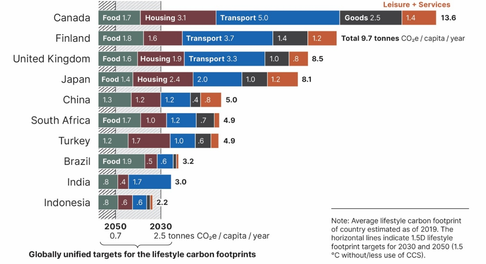
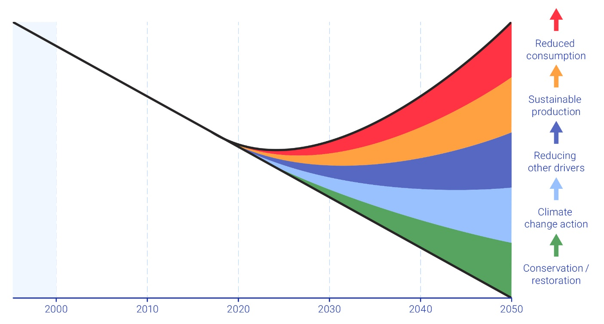
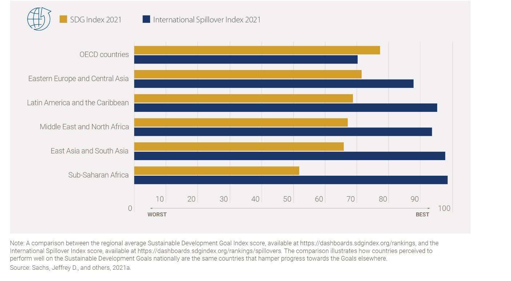
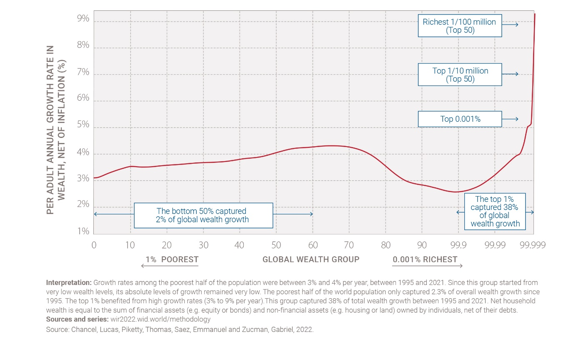
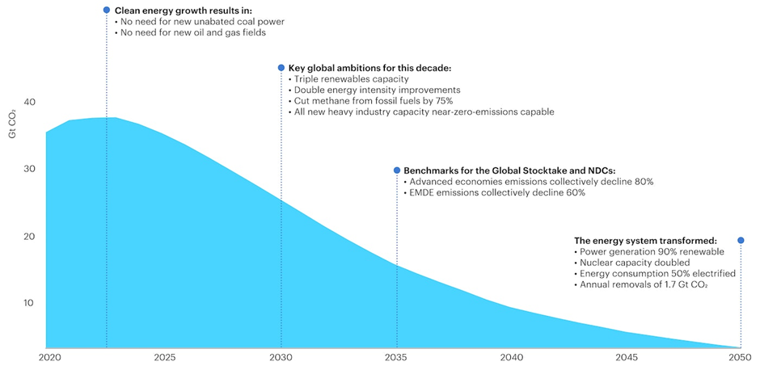
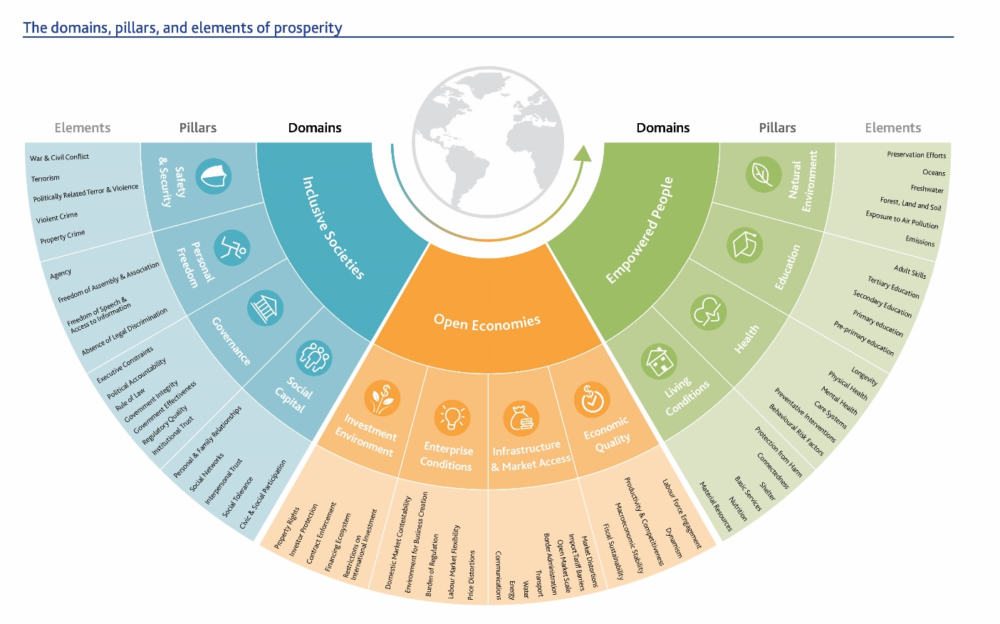
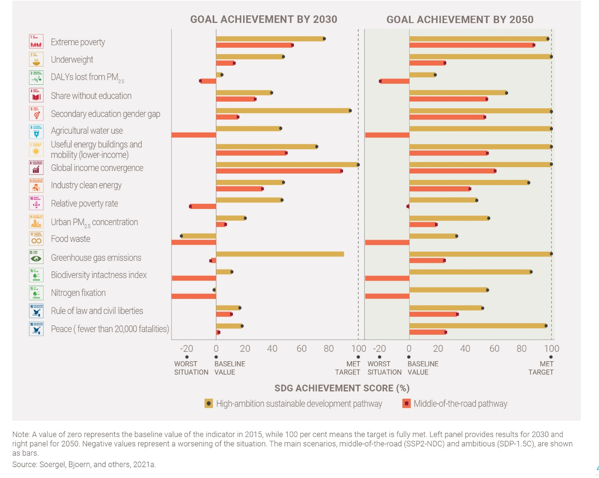
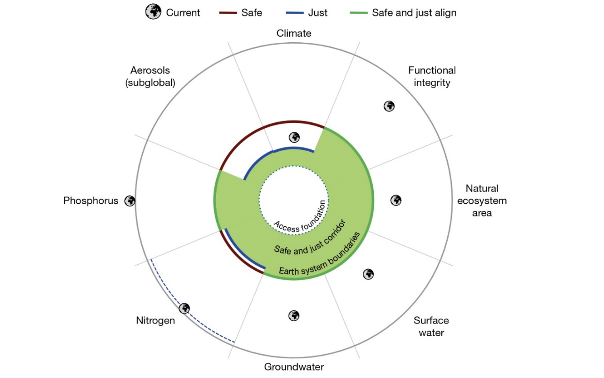
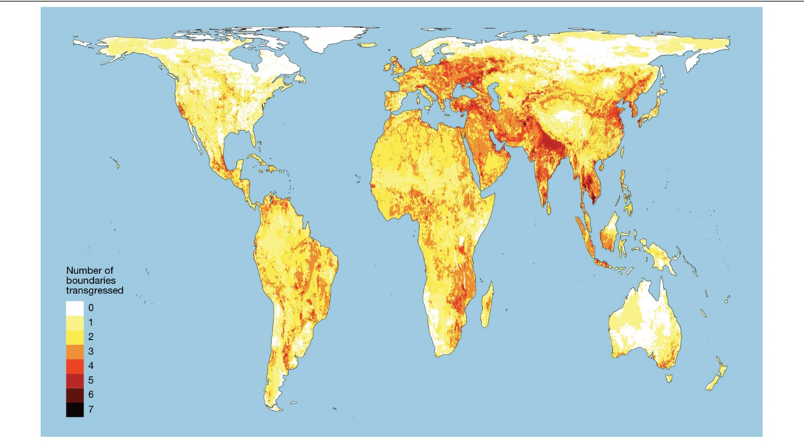
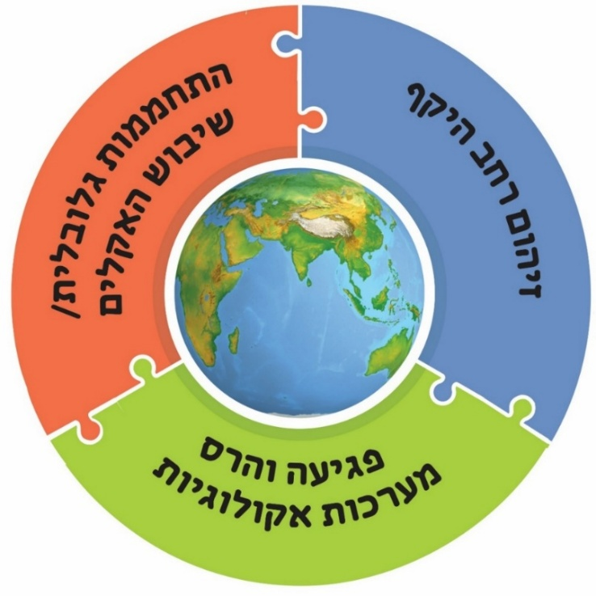

”אופטימיזם כהערכה עובדתית אינו אמין, אך הוא חובה מוסרית: יש לתת לקב“ה ליהנות מן הספק. אם לא מאמצים את התמונה האופטימיסטית של העולם, קל מאוד להשתמש בזה כתירוץ לאי מעש.“ יוסף אגסי.
13. סיכום - הבעיות הניצבות לפתחנו ודרכי התמודדות#
בפרק זה נחזור ונציג את מקור הבעיות הגורמות למשבר הסביבה והאקלים (13.1), נפרט יעדים להתמודדות על בסיס ה-SDG של האו“ם (13.2). לאחר מכן נציג עדויות לאי עמידה ביעדים אלו (13.3) ונציע הסברים לכך (13.4). נעבור על פתרונות אפשריים למשבר (13.5) ונתמקד בשינוי הנדרש בהגדרת מדדי צמיחה כלכלית (13.6). נסביר מדוע צדק חברתי חייב להיות חלק מהפתרון (13.7), ונטען שרק גישה המשלבת טיפול במשבר האקלים, בפגיעה בעולם החי ובזיהום הסביבה תוכל לעבוד (13.8). נסיים עם כמה פעולות שניתן לעשות ברמה האישית וכמה סיבות לאופטימיות זהירה לגבי הסיכוי להצליח בהתמודדות הזאת (13.9).
13.1 מקור הבעיות הסביבתיות#
בהמשך למה שכבר נכתב בפרק המבוא, ניתן לומר שמקור הבעיה הסביבתית והאקלימית הוא ביחסם של בני האדם אל הטבע ואל משאבי כדור הארץ כאל משאב אין סופי, ובמגמה הבלתי פוסקת של ניצול הולך וגדל של משאבי טבע, וכתוצאה מכך פגיעה באיזונים הקיימים במערכות השונות בכדור הארץ. היטיב לתאר זאת אנטוניו גוטרש (António Guterres), מזכ“ל האו“ם, בשנת 2020:[1] ”האנושות מנהלת מלחמה נגד הטבע, זו התאבדות..**. עשיית שלום עם הטבע היא המשימה של המאה ה-21… הנזקים שהאדם גורם לטבע: התפשטות מדבריות; היעלמות ביצות; כריתת יערות; דיג מופרז באוקיינוסים וחניקתם בפלסטיק; מותן של שוניות אלמוגים; זיהום אוויר שבעטיו מתים בעולם כתשעה מיליון בני אדם בשנה; והעובדה שמקור 75% מהמחלות המדבקות החדשות המתגלות בבני אדם הוא בבעלי חיים.“ מעבר לכך, אין הכרה מספקת בעובדה שהאנושות ואיכות הסביבה קשורות בקשר גורדי שלא ניתן להתירו. ההשפעה של בני אדם על כדור הארץ מגיעה לפינות הנידחות ביותר על הכדור, ואפילו האוקיינוסים שעד לאחרונה נדמו גדולים ועמוקים מכדי להיות מושפעים מפעילות אנושית, מראים סימנים של פגיעה משמעותית.[2] צריך גם לקחת בחשבון שיתכנו בכדור הארץ שינויים קיצוניים יותר ממה שאנחנו צופים, שינויים שכיום נראה שהסבירות להתרחשותם היא נמוכה,[3] כמו למשל חלק מתופעות האקלים של השנים האחרונות שרוב המדענים ציפו שיתרחשו רק בעוד עשור ומעלה. ישנה גם סכנה שבחלק מהתהליכים המושפעים מפעילות האדם, האנושות תגיע לנקודות ”אל-חזור“ (tipping points, ראו פרקים 6, 8, 10).[4] אלה נקודות שבהן עוצמת השינוי תהיה כה גדולה, עד שהמערכת תשתנה בצורה דרמטית, והשינוי יהיה בלתי הפיך לתקופה ארוכה. כאן המקום להדגיש שאין אף שינוי שהאנושות תעשה בכדור הארץ שיהיה בלתי הפיך לנצח (למעט הכחדת מינים). אולם, מספיק שידרשו כמה אלפי שנה על מנת לבטל את השינוי, כדי שמבחינתנו יהיה מדובר בשינוי בלתי הפיך. החשש מהגעה לנקודות אל-חזור מלווה את הדיון בהתחממות הגלובלית,[5] אולם הוא מטריד גם בהקשר של נושאים אחרים, כמו למשל מחזור החנקן והזרחן.[6]
אחת השאלות המעסיקות מדענים כבר עשרות שנים היא השאלה מתי הפכה השפעת האדם על הסביבה לבעיה עולמית. לאחרונה, הוצע להשתמש בסדימנטים של אגם קטן בקנדה כרשם של השפעת האדם על הסביבה בניסיון לקבוע את התחלת עידן האנתרופוקן (Anthropocene),[7] העידן הגיאולוגי שבו השפעת האדם על פני השטח של כדור הארץ הופכת להיות מרכזית. הנטייה היא לקבוע את שנות החמישים של המאה ה-20 כתחילת עידן זה. אולם, ניסיון זה נמצא בסתירה לממצאים של חוקרים רבים המצביעים על כך שהשפעת האנושות על הסביבה בקנה מידה גלובלי התחילה הרבה לפני כן. נציין רק את מחקרו פורץ הדרך של פטרסון משנת 1969 (ראו פרק המבוא)[8] שהראה כי זיהום עופרת הגיע לאזור הקטבים כבר לפני שנים רבות. סביר מאד שגם מזהמים אחרים מעשה ידי אדם, בדומה לעופרת, הגיעו לפינות המרוחקות ביותר בכדור הארץ, כלומר שכבר אז זיהום מעשה ידי אדם הגיע לפינות הנדחות ביותר של כדור הארץ. כמו כן, ראוי לציין כאן את טענתו של רודימן (Ruddiman) שהשפעת בני האדם על אקלים כדור הארץ החלה עם המהפכה החקלאית לפני אלפי שנים (ראו פרק 6).[9]
13.2 קביעת יעדים להתמודדות עם בעיות הסביבה#
דרך טובה לתאר את כיווני ההתמודדות הנדרשים לפתרון משבר הסביבה והאקלים, היא באמצעות בחינה של יעדי האו“ם לפיתוח בר-קיימא (SDG – Sustainable Development Goals)[10] שפורסמו בשנת 2015. כפי שרואים ברשימה המופיעה להלן, יעדי הפיתוח של האו“ם כוללים קשת רחבה של נושאים ומדגישים שני היבטים: צדק חברתי (באדום) והגנת הסביבה (בירוק). אולם, ישנם שני חסרונות עיקריים לרשימת יעדי האו“ם: (1) התעלמות משורש הבעיה – צמיחה כלכלית מתמדת המבוססת על צריכה גדלה של משאבי טבע, בעיקר על ידי המדינות העשירות, ובמקביל המשך גידול האוכלוסייה. (2) קושי מובנה להעריך כמותית את העמידה ביעדים.[11]
SDG 17 goals (https://sdgs.un.org/goals):
SDG 1: End poverty in all its forms everywhere.
SDG 2: End hunger, achieve food security and improved nutrition, and promote sustainable agriculture.
SDG 3: Ensure healthy lives and promote well-being for all at all ages.
SDG 4: Ensure inclusive and equitable quality education and promote lifelong learning opportunities for all.
SDG 5: Achieve gender equality and empower all women and girls.
SDG 6: Ensure availability and sustainable management of water and sanitation for all.
SDG 7: Ensure access to affordable, reliable, sustainable, and modern energy for all.
SDG 8: Promote sustained, inclusive and sustainable economic growth, full and productive employment and decent work for all.
SDG 9: Build resilient infrastructure, promote inclusive and sustainable industrialization, and foster innovation.
SDG 10: Reduce inequality within and among countries.
SDG 11: Make cities and human settlements inclusive, safe, resilient, and sustainable.
SDG 12: Ensure sustainable production and consumption patterns.
SDG 13: Take urgent action to combat climate change and its impacts.
SDG 14: Conserve and sustainably use the oceans, seas, and marine resources for sustainable development.
SDG 15: Protect, restore, and promote sustainable use of terrestrial ecosystems, sustainably manage forests, combat desertification, and halt and reverse land degradation and halt biodiversity loss.
SDG 16: Promote peaceful and inclusive societies for sustainable development, provide access to justice for all and build effective, accountable and inclusive institutions at all levels.
SDG 17: Strengthen the means of implementation and revitalize the Global Partnership for Sustainable Development.
אלטרנטיבה לגישה של האו“ם כפי שהיא מתבטאת ב-17 יעדי פיתוח בר-קיימא, מוצגת בספר שפורסם בשנת 2022 ובו מתואר עולם שבו הציביליזציה האנושית מכוונת להצטמצמות.[12] מחברי הספר טוענים (ואני מצטרף לטענתם) שכל הפתרונות שהוצעו להתמודדות עם משבר הסביבה והאקלים הם פתרונות של נוחות ואינם מקיפים ועמוקים דיים על מנת להתמודד עם שורש הבעיה: (1) המשך הצמיחה הכלכלית המבוססת על צריכה גוברת של משאבי טבע, בעיקר על ידי המדינות העשירות, ו-(2) המשך גידול האוכלוסייה. לטענת המחברים פתרונות מבוססי צמיחה כלכלית ופיתוח טכנולוגי אינם הפתרון הנכון למשבר הסביבה. בהמשך הספר טווים המחברים עתיד שבו לאחר משבר עולמי, תתפתח ציביליזציה שונה מהותית מזאת הקיימת כיום, כזאת שתחיה בהרמוניה עם הטבע. השאלה האם זהו התסריט הסביר או שמא ישנן אפשרויות אחרות היא שאלה שאין עליה מענה. כלומר, כל הפתרונות שיוצגו בהמשך הפרק יצטרכו להתמודד עם אי הוודאות הזאת לגבי עתיד האנושות.
13.3 עדויות לאי עמידה ביעדים#
הקושי בהתמודדות עם אתגר כל כך מורכב מתבטא בכך שאחת לכמה שנים מסתבר שהאנושות אינה עומדת ביעדי ה-SDG של האו“ם או ביעדים סביבתיים אחרים: (1) גבולות פלנטריים – ראו את פרק המבוא וכן בהמשך הפרק הזה; (2) המגמה העקבית של הקדמת התאריך של ה-overshoot day, התאריך בשנה שבו בני האדם ניצלו משאבים שייקח לכדור הארץ שנה שלמה לחדש;[13] (3) ההחרפה במשבר האקלים בשנים האחרונות. זאת למרות שורה של אמנות בינלאומיות שהחלו בכינוס ריו דה ז’נרו[14] בשנת 1992, כולל הסכם פריז ורשימת יעדי ה-SDG של האו“ם משנת 2015, שמטרתן הייתה לתעל את ההתפתחות הכלכלית והמדינית בעולם לכיוונים סביבתיים יותר, תוך שמירה על מגוון ביולוגי, מאבק בהתחממות הגלובלית ומתן אפשרויות טובות יותר לאוכלוסיות מוחלשות (ראו נספח 1).
בשנת 2019 התפרסמה הערכה (6GEO) שהציגה אינדיקטורים לטיב ההתמודדות עם 17 יעדי ה-SDG,[15] ומצאה שלמרות מאמצים של מדינות וגופים רבים, מצב הסביבה בכדור הארץ ממשיך להידרדר בעיקר עקב תהליכי ייצור וצריכה שאינם ברי קיימא, דבר המתבטא בין היתר בהחרפת ההתחממות הגלובלית. ברור למחברי הדוח שיש להפעיל מספר מנגנונים על מנת לשפר את המצב. למשל, הם הציעו מנגנון של פיצוי עבור פליטות גזי חממה שהכנסותיו יוקדשו למאבק בעוני, ומנגנון נוסף שיתמקד במעבר לדיאטה בריאה יותר, בעיקר באמצעות הפחתה של צריכת בשר. האתגר הגדול הוא כיצד ליישם את המנגנונים הללו בעולם האמיתי, משום שמאד קשה להגביר את המחויבות של מדינות וארגונים לעמוד בהם ולעיתים יש ביניהם סתירה.
בשנת 2022 התפרסם דוח נוסף שבחן את המצב בארצות האיחוד האירופאי (Environmental Implementation Reviews - EIRs).[16] גם במדינות מאד ”סביבתיות“ כמו הולנד נמצאו מחד מספר נקודות אור כגון קידום כלכלה מעגלית והגנה על השטחים הפתוחים שנותרו במדינה (שמירת טבע). זאת למרות שרוב שטחה של הולנד משמש לחקלאות או מושפע מפעילות חקלאית למשל עקב זליגת נוטריינטים. מאידך, בהולנד כמו במדינות האיחוד האירופאי האחרות, יש עוד כברת דרך ארוכה על מנת לעמוד ביעדים, ולטענת המחברים סכום ההשקעה בעמידה ביעדי ה-SDG צריך להיות לפחות 1% מהתמ“ג הכולל של המדינה.[17] גם לשוויצריה, המככבת לצידה של הולנד כמדינה עם מודעות סביבתית גבוהה ביותר, יש מדְרך אקולוגי גדול מידי בעיקר עקב ייבוא חומרי גלם ומוצרים הנחוצים לשמר את רמת החיים הגבוהה של תושביה.[18] סביר מאד שהמצב חמור יותר במדינות שנמצאות מחוץ לאיחוד האירופאי, שם אחוז ההשקעה הנדרש לעמידה ביעדי ה-SDG גבוה משמעותית מ-1% מהתמ“ג.
גם בחינה של עמידה ביעדים ה-SDG עד שנת 2023, מצביעה על הצלחה חלקית בלבד, ועל הצורך לקדם את המדע והאתיקה שיאפשרו עמידה ביעדים.[19] נכון לשנת 2023, בעיקר מדינות קטנות ובינוניות באירופה ובאסיה התגייסו לעמידה ביעדי ה-SDG ואילו המזהמות העיקריות, סין, ארצות הברית, הודו ורוסיה רחוקות מאד מעמידה ביעדים.[20] יתרה מזאת, ישנן מדינות המשקיעות הרבה במעבר לאנרגיות חילופיות ובמקביל ממשיכות להפיק דלקים פוסיליים בכמויות גדולות ולמכור אותם לכל המרבה במחיר משיקולים כלכליים קצרי טווח.[21] בשנת 2025 התפרסמה עבודה נוספת שבחנה את העמידה ביעדי ה-SDG, וגם היא הצביעה על עמידה חלקית בלבד, וצפתה שעד 2030 העמידה הכוללת ביעדים תהיה כ-63%, רחוק מהיעד הרצוי.[22]
הדוגמא המדוברת ביותר לאי עמידה ביעדים שנקבעו באמנות בינלאומיות היא ההתחממות הגלובלית.[23] באמנת פריז (21COP – שנת 2015)[24] נקבע יעד של חריגה ב-2.0° צלזיוס, ובשאיפה 1.5° מהטמפרטורה השנתית הממוצעת בכדור הארץ של טרום העידן התעשייתי (כ-15° צלזיוס ממוצע עולמי לאורך השנה) עד סוף המאה העשרים ואחת. זאת על מנת להימנע מהשלכות מרחיקות לכת של התחממות גלובלית כגון גלי חום בלתי נסבלים באזורים רבים, התגברות אירועי גשם ושיטפונות, סערות טייפון והוריקן, עליית מפלס הים, ועוד (ראו פרק 6). כשבע שנים לאחר מכן, דווח שרק 26 מתוך 195 המדינות שחתמו על אמנת פריז מתקרבות לעמידה ביעדים שנקבעו להן והסכימו להגביר את מאמציהן להגבלת פליטת גזי חממה,[25] ואילו הפולטות הגדולות ביותר של גזי חממה (סין וארצות הברית)[26] אינן מתקרבות לעמידה ביעדים ולא הגדילו את מחויבותן.
עד כמה הנושא סבוך ניתן ללמוד מהדוגמא הבאה: בעוד שהסכם פריז משנת 2015 הציב את היעד לעליית הטמפרטורה, רק ב-28COP (בשנת 2023) הצליחו להכניס להצהרת הסיכום את האמירה המפורשת שעל מנת לעמוד ביעד הזה יש להפחית את השימוש בדלקים פוסיליים,[27] וב-29COP בשנת 2024 שוב התעוררה מחלוקת סביב האמירה הזאת.[28] כל זאת כאשר גלוי וידוע ששריפת דלקים פוסיליים היא המקור העיקרי לפליטות גזי חממה (איור 5.3). בסופו של דבר 29COP הסתיימה עם הסכמה של המדינות העשירות להגיע עד 2035 ליעד של לפחות 300 מיליארד דולר שיועברו מידי שנה למדינות מתפתחות על מנת לסייע בהתמודדות עם שינוי אקלים, כולל, אך לא רק מעבר לאנרגיות שאינן פולטות גזי חממה.[29] 30COP בברזיל (2025) הסתיים ללא שינוי ניכר מהוועידות הקודמות: לא הוצגה מפת דרכים לסילוק דלקים פוסיליים אבל נרקמו תוכניות לסיוע למדינות המתפתחות להפחית את קצב הפגיעה ביערות וגויסו כ-5% מהסכום המיועד למטרה זאת.[30] סיכום של מקורות האנרגיה, פליטות גזי חממה וההשלכות לגבי ההתחממות הגלובלית בעשורים הבאים פורסמה ב-Nature בשנת 2026. השורה התחתונה היא שללא שינוי דרמטי במהלך העניינים, ההתחממות הגלובלית בשנת 2100 צפויה להיות יותר מ-2°c.[31]
13.4 הסיבות לאי עמידה ביעדים#
כאשר בוחנים את הסיבות לאי עמידה ביעדים שנקבעו באמנות בינלאומיות שונות בנושאי סביבה ואקלים, מתגלים מספר מאפיינים. קודם כל, למרות הצהרות בומבסטיות של מנהיגי מדינות וראשי חברות מסחריות, הבנקים ממשיכים להעמיד מימון לפרויקטים הפוגעים בסביבה, ובראשם השקעות באיתור והפקת דלקים פוסילים.[32] הדרך עוד ארוכה עד שתחתם אמנה בינלאומית ל“הפסקת ההפקה והשימוש בדלקים פוסילים“, בדומה לאמנת אי הפצה של נשק גרעיני.[33] דוגמא מאלפת לסתירה בין פיתוח אנרגיות מתחדשות והמשך שימוש בדלקים פוסילים קורית בסין. מצד אחד יש בסין קצב צמיחה מרשים ביותר של אנרגיה מתחדשת, עם גידול של כ-356 GW אנרגיה סולרית ורוח בשנת 2024 ואפילו יותר ב-2025.[34] מצד שני 93% מהתחלות הבנייה של תחנות כוח פחמיות בעולם בשנת 2024 קרו בסין עקב הרצון ליצור ביטחון אנרגטי.[35] כפי שנכתב בפרק 6, הקצב האיטי של המעבר לאנרגיות חילופיות נובע בחלקו מן הסובסידיה הגדולה שניתנת כיום לשימוש בדלקים פוסיליים.[36] המוטיבציה לסובסידיות הללו נובעת כנראה משיקולים קצרי טווח של מתן תמריצים לכלכלה העולמית תלוית הצמיחה.[37] הערכה דומה של הסובסידיות הניתנות לדלקים פוסיליים ולמפגעים סביבתיים אחרים הופיעה בדוח של Earth Track משנת 2024.[38]
חשוב גם לשים לב לסתירה הקיימת בין יעדי פיתוח שונים. עמידה ביעד מסוים (למשל, פליטות גזי חממה נמוכות) מלווה בהרבה מקרים בצריכה מוגברת של חומרי גלם לבניית מתקנים סולאריים או רוח. מתקנים שאת חלקם לא ניתן יהיה למחזר בסוף השימוש, או שהשימוש בהם כרוך בעלות גבוהה מאד, מה שמגביל אותו רק למדינות עשירות. דוגמא ציורית הוא בנין EDGE, שנבנה על ידי חברת DELOITTE כבניין משרדים באמסטרדם. בשנת 2015 הוא הוכתר כבניין החכם בעולם על ידי המגזין של חברת בלומברג, ואף הוכתר בכתבה כבניין ”הירוק“ ביותר בעולם.[39] מצד אחד, הפעילות בבניין כמעט ואינה פולטת גזי חממה, אולם הקמת הבניין ותפעולו צורכים כמות גדולה מאד של חומרי גלם, חלקם נדירים ביותר. למשל, לקולטים הסולריים שלו, המספקים יותר אנרגיה מאשר הבניין צורך ביום שמשי, או ל-28 אלף הגלאים המפוזרים בין כתליו דרוש מספר גדול של מתכות נדירות, חלקן רעילות וחלקן מחייבות שינוע מהקצה השני של העולם. ובנוסף, לא ברור מהי תוחלת החיים של הקולטים ושל הגלאים, אולם מאד סביר שהיא קצרה בהרבה מתוחלת החיים של הבניין. דוגמא אחרת היא תעשיית הטקסטיל והאופנה שמצד אחד מנסה למצוא דרכים לייצר בגדים בדרכים שמזהמות פחות מים וצורכות פחות אנרגיה, ומצד שני מעודדת צריכת בגדים.[40]
כבר בשנת 1994 אמר פרדריק ג’ימסון (Jameson) כי יותר קל לדמיין את קץ העולם מאשר לדמיין את קץ הקפיטליזם.[41] כלומר, קשה מאד לנטוש את ההרגלים של עידוד הצריכה והסגידה לצמיחה כלכלית מתמדת. על מנת להתאים בין הסגידה לקפיטליזם לבין הצורך לפתור את בעיות הסביבה והאקלים של העולם, הומצא המונח ”כלכלה ירוקה“ או ”צמיחה ירוקה“. דוגמא טובה לטיעונים של המצדדים ב“צמיחה ירוקה“ מופיעה במאמר של פול קרוגמן (Krugman, חתן פרס נובל לכלכלה בשנת 2008) בזכות ”הצמיחה הירוקה“.[42] קרוגמן טוען שאין קשר בין צמיחה כלכלית וזיהום הסביבה, ולראיה, איכות הסביבה טובה יותר במדינות עשירות. הוא מביא כדוגמא את השיפור שחל באיכות האוויר של לונדון והירידה בפליטות פד“ח (פחמן דו חמצני – \(CO_2\)) לאדם, תוך כדי מעבר לאנרגיות מתחדשות. ברור שזהו טיעון שלוקח בחשבון רק חלק מהתמונה, משום שבחמישים השנים האחרונות כלכלות העולם המערבי ייצאו את אמצעי הייצור המזהמים[43] וכן את הפסולת שלהן, על כל סוגיה לארצות עניות יותר (ראו גם פרק 4).[44] ראו לדוגמא את רשימת הארצות המובילות במיצוי ועיבוד של מינרלים ודלקים פוסיליים שונים (איור 4.9). חלקן של מדינות OECD ברשימת המדינות הללו הוא קטן ביותר. בנוסף לכך, טוען קרוגמן כי:
”So, when you hear an environmentalist say something like, »We live on a finite planet, so we can’t have unlimited economic growth«, what they’re actually revealing is that they don’t understand what economic growth means. Furthermore, in practice, they’re lending aid and comfort to anti-environmentalists, who want us to believe that protecting the environment is incompatible with rising living standards.“
הנושא של צמיחה כלכלית הוא רחב ביותר, אולם אלה המדברים על עולם סופי ומוגבל-משאבים מתכוונים למרכיב בצמיחה הכלכלית המחייב הגברת כרייה של חומרי גלם גם אם יש לעיתים מעבר מחומר אחד למשנהו, הגוררת פגיעה הולכת וגדלה בשטחים פתוחים, במערכות אקולוגיות, באיכות אוויר, מים וקרקע. הגברה זאת מחייבת עליה בצריכת אנרגיה והתמודדות עם כמויות הולכות וגדלות של פסולת ומוצרים המגיעים לסוף חייהם. בהקבלה לדבריו, לקרוגמן (כמו לכלכלנים רבים) אין את ההבנה מהו נזק סביבתי ועד כמה אנחנו מתקרבים למצב שבו תהיינה פגיעות רחבות היקף בתפקוד של מערכות אקולוגיות רבות, הכחדת מינים שהוא תהליך בלתי הפיך כמעט תמיד,[45] ופגיעה בבריאותם של בני אדם רבים, בעיקר בארצות המתפתחות. הוויכוח בנושא זה בין כלכלנים לחוקרי סביבה מצא את ביטויו בסקר שפורסם בשנת 2026.[46]
מעבר לוויכוח האם המאבק במשבר הסביבה והאקלים מחייב נטישה של הפרדיגמה הקפיטליסטית, או שמא ניתן לקיים צמיחה כלכלית ירוקה ובת קיימא (נחזור לנקודה זאת בהמשך הפרק), חוליים נוספים של השיטה הקפיטליסטית פוגעים במאבק במשבר הסביבה. דוגמא ראשונה במעלה היא תופעה הקרויה ”Greenwashing“.[47] הכוונה היא למס שפתיים שגופים מסחריים משלמים בשם המאבק במשבר הסביבה, כאשר מטרתם בפועל היא הגדלת המכירות של מוצר כזה או אחר. דוגמא חמורה אף יותר היא הסתרת ועיוות מידע על ידי גופים מסחריים ופוליטיים.[48] הדוגמא הבולטת ביותר היא העלמת המידע שצברו חברות האנרגיה הגדולות לגבי הסכנה הטמונה בשימוש בדלקים פוסיליים ותרומתם הצפויה להתחממות גלובלית. בשנת 2023 התפרסם מאמר שחשף תכתובות פנימיות של חברת ExxonMobil במשך שנים ארוכות ובהן מתגלה שעובדים ומדענים בחברה ניבאו בצורה מדויקת למדי את קצב ההתחממות הגלובלית (0.20 ± 0.04°C per decade), בזמן שמנהלי החברה הדגישו בפני הציבור את חוסר הוודאות בממצאים הקושרים בין שריפת דלקים פוסיליים והתחממות גלובלית.[49] כל זאת בתקופה בה הרווחים של חברות האנרגיה הגיעו לשיאים חדשים,[50] ולמרות העובדה שחברות הדלקים הפוסילים הגדולות עדין משווקות יותר דלקים פוסילים מהכמויות שיאפשרו עמידה ביעד של התחממות מרבית של 1.5° צלזיוס.[51] זאת התנהגות דומה למה שקרה בשעתו עם חברות הסיגריות וסרטן ריאות, או חברות תרופות והשפעתם המזיקה של משככי כאבים. התוצאה של מסע ההכחשה השקרי הזה של חברות האנרגיה הביא (ויביא) לגלים של תביעות ייצוגיות על ידי מדינות, ערים ויחידים שנפגעו מהתחממות גלובלית ומשימוש בדלקים פוסיליים, ועל כך בהמשך. דוגמא חריפה נוספת לקשר הבעייתי שבין כלכלת השוק החופשי ומשבר הסביבה מתגלה במסמך שפורסם בשנת 2023 על ידי Heritage Foundation,[52] גוף מחקר שמרני בארצות הברית שהכין מסמך בן 920 עמודים עבור הממשל האמריקאי במידה ונשיא רפובליקני ייבחר ב-2024 (מה שאכן קרה). פרק שלם במסמך המפורט הזה מוקדש לביטול כל היוזמות של ממשל ביידן ואובמה להילחם במשבר האקלים,[53] תוך פגיעה בסוכנות להגנת הסביבה האמריקאית (EPA)[54] במטרה להקשות עליה לאכוף את החוקים להגנת הסביבה מזיהום תעשייתי. הכל בשם בטחון אנרגטי, קידוש התחרותיות הכלכלית בארצות הברית והגבלת ההתערבות הממשלתית בפעילות העסקית של חברות. מיד עם היבחרו, החל טראמפ במימוש התוכניות הללו,[55] ונותר לקוות שיהיו מספיק כוחות בחברה האמריקאית שיעמדו בפרץ. הקונפליקט החריף בין תאוות הרווח של חברות מסחריות וצדק סביבתי מגיע לעיתים עד לפגיעה פיזית בפעילי סביבה על ידי ארגוני פשע.[56] מצד שני קיים גם טרוריזם של פעילי סביבה (אקו-טרוריזם),[57] אם כי הוא על פי רוב הרבה פחות קטלני.
13.5 פתרונות אפשריים#
למרות כל הנאמר לעיל, החברה והכלכלה העולמית נעות בכיוון של התמודדות עם משבר הסביבה והאקלים. לעיתים התנועה איטית, לעיתים נעשות טעויות, חלקן בשוגג וחלקן במזיד, אולם המגמה קיימת. מגמה זאת נשענת על ההכרה שמשבר סביבתי ואקלימי מהווה סכנה לאומית (National security) בהרבה מדינות,[58] ועל כך שלהתמודדות צריכים להיות עקרונות פעולה (ראו פרוט בהמשך).[59]
קודם כל, נעשה ניסיון לעקוב אחר ההתקדמות (או אי ההתקדמות) לקראת עמידה ביעדי ה-SDG של האו“ם.[60] במקביל, יש פיתוח בלתי פוסק של טכנולוגיות שמטרתן להתמודד עם בעיות סביבתיות (green technology או green tech).[61] זהו נושא רחב יריעה, ובמסגרתו יש לבחון כל טכנולוגיה מוצעת באופן שלוקח בחשבון את כל שלבי החיים של הטכנולוגיה, תוך שקלול הדרישה האנרגטית, התרומה לפליטות גזי חממה, שימוש בחומרי גלם מתכלים או בעיתיים מבחינת רעילותם, הפגיעה האפשרית בשטחים פתוחים, והשימוש שייעשה במוצרים כשהם יסיימו את תפקידם (מחזור, כלכלה מעגלית מול פסולת והטמנה). בין הכיוונים המבטיחים בתעשייה הירוקה ראוי לציין את הננו-טכנולוגיה,[62] הנדסה באמצעות הטבע,[63] מחשוב קוונטי[64] ואינטליגנציה מלאכותית.[65] ברור שללא שיפורים טכנולוגיים, ההתמודדות עם משבר הסביבה והאקלים לא תישא פרי, אולם הפתרונות הטכנולוגיים חייבים להיות מלווים בהבנה עמוקה של תהליכים פיזיקליים, כימיים, ביולוגיים וגאולוגיים הפועלים בכדור הארץ וכיצד הם מושפעים מפעילות האדם. בנוסף, הם חייבים להיות מלווים בשינויים מערכתיים בכלכלה ובמדיניות.[66] דוגמא לכך היא הבנת המורכבות של משאבי טבע כמו מים למשל,[67] או הצורך לבסס מנגנון פיצויים בו מדינות עשירות מפצות מדינות עניות על הנזק שרמת החיים שלהן גורמת לסביבה במדינות העניות, למגוון הביולוגי בהן[68] ולהתחממות הגלובלית בכלל.[69] בשנת 2019 התפרסם דוח של האקדמיה האמריקאית למדעים שהציג את חמשת האתגרים המרכזיים בהתמודדות על משבר הסביבה והאקלים:[70] (1) אספקת מזון, מים ואנרגיה באופן בר-קיימא. (2) מזעור ההתחממות הגלובלית והתמודדות עם השלכותיה. (3) תכנון עתיד ללא זיהום וללא פסולת. (4) תכנון ערים עם יעילות אנרגטית, בריאות, ועמידות. (5) פיתוח מנגנון קבלת החלטות וביצוע מבוסס-ידע. אתגרים אלה יעברו כחוט השני בכל ההצעות לפתרון שיוצגו בהמשך. בנוסף יש להדגיש: (1) יש לנטוש את השאיפה להגדיל את אוכלוסיית בני האדם ולהסתפק בשני ילדים לאשה בממוצע; ו-(2) צריך זנוח את הכלכלה-תלוית הצמיחה, הנשענת על ניצול הולך וגדל של משאבי טבע.[71] ברוח הדברים הללו מאמר שפורסם ב-2025 פורש את 10 העקרונות של התמודדות נכונה עם משברים (כולל משבר הסביבה והאקלים) ומדגיש כמה מהעקרונות שהוצגו בספר הזה:[72]
(1) social–ecological embeddedness and holistic well-being; (2) interdisciplinarity and complexity thinking; (3) limits to growth; (4) limited substitutability of natural capital; (5) regenerative design; (6) holistic perspectives of people and values; (7) equity, equality and justice; (8) relationality and social enfranchisement; (9) participation, deliberation and cooperation and (10) post-capitalism and decolonization.
כבר מספר עשורים נעשים ניסיונות להפחית נזקים סביבתיים כמו זיהום אוויר ופליטות גזי חממה באמצעות תמריצים הנקראים ”Cap-and-trade“.[73] ניסיונות אלו כשלו ברובם בעיקר משום שהם מהווים תמריץ להוריד את הפליטות לרמה מסוימת, הרבה פעמים מעל הרמה הרצויה ולעצור שם. פתרון אלטרנטיבי, שהוא כנראה טוב הרבה יותר ושהוצע כבר בשנת 2008, נקרא ”Fee-and-dividend“[74] ולמרבה הצער הוא לא יושם מעולם, בעיקר בגלל התנגדות של הגופים המזהמים ויכולתם להשפיע על מקבלי ההחלטות בארצות הברית ובארצות אחרות.[75] בשנת 2021 התפרסם דוח של מועדון רומא,[76] הגוף שכבר בשנת 1971 הצביע על מגבלות הצמיחה הכלכלית בעולם עם משאבים סופיים (ראו פרק המבוא).[77] הדוח של 2021 מדגיש בעיקר את הצורך להפחית את הצריכה במקביל להתייעלות אנרגטית של שיטות ייצור על מנת להתמודד עם משבר הסביבה; התייעלות אנרגטית שאינה מופיעה ביעדי האו“ם (SDG). הדוח מדגיש לא רק את ההתמודדות עם ההתחממות הגלובלית אלא את הצורך להתמודד במקביל עם פגיעה במגוון הביולוגי וכריית חומרי גלם מזיקים ורעילים. הדוח מציג את האפשרות של קביעת מגבלות לכריית משאבי טבע, אולם מדגיש יותר את הצורך לפתח מנגנונים של קבלת החלטות ומנהל ציבורי שיפחיתו את הדרישה לחומרי גלם וידגישו את ההיבטים הלא-חומריים של איכות החיים. הדוח מציע להתמקד במושג של ”הסתפקות במה שיש – sufficiency“, מושג מפתח שבאמצעותו אולי יהיה ניתן להתמודד עם פליטות גזי החממה ושימוש בחומרי גלם, הממשיכים לגדול למרות שלושה עשורים של מאמצי הפחתה. המחברים טוענים כי רק באמצעות שינוי פרדיגמטי כזה, מעבר מתפיסה שמנסה להפחית פליטות ולהתייעל אנרגטית וחומרית, לתפיסה של צרכנות תלוית צרכים והסתפקות במה שיש, ניתן יהיה להתמודד עם בעיות הסביבה העיקריות. במשך שנה בחנו מחברי הדוח את המדְרך האקולוגי הפחמני לנפש שמותירות הפעילויות העיקריות של אדם (מזון, מגורים, תחבורה, מוצרי צריכה, שירותים ונופש) בעשר ארצות המייצגות את הסוגים השונים של המדינות בכדור הארץ מבחינת גודלן, צפיפותן, עושרן ותרבותן (קנדה, פינלנד, בריטניה, יפן, סין, דרום אפריקה, טורקיה, ברזיל, הודו, אינדונזיה). קיים מנעד רחב ביותר של המדְרך האקולוגי הפחמני (מבוטא כפליטות פד“ח לנפש לשנה) הנע בין 14.2 טון בקנדה לעומת 2.2 טון באינדונזיה (איור 13.1). יפן, בה רמת החיים איננה נופלת מזו של קנדה נמצאת בדיוק באמצע בין קנדה ואינדונזיה מבחינת המדְרך האקולוגי הפחמני. ישנה גם שונות גדולה ביותר בין מרכיבי הפליטות, כאשר בקנדה, רחבת הידיים והדלילה, תחבורה מהווה את מרכיב הפליטה העיקרי ואילו בסין, ברזיל ואינדונזיה ייצור, אספקה, צריכה ופינוי מזון הם הגורמים העיקריים לפליטות פד“ח. כלומר, העתקה של מנגנונים הפועלים ביעילות במדינה אחת למדינות אחרות יכולה לשפר את המדְרך האקולוגי הפחמני, עוד לפני שבצענו שינוי רדיקאלי באורחות החיים.
באותה שנה בה התפרסם הדוח של מועדון רומא, נערכה בניירובי ועידה בהובלת האו“ם שהובילה לפרסום דוח מקיף על משבר הסביבה,[78] אשר הוזכר בפרקים 3, 4, 5, 7, 8, 11. הדוח ציין והגדיר תחומי מפתח לשינוי פרדיגמה, המתכתבים עם הדוח של האקדמיה האמריקאית למדעים (2019) שהוזכר קודם: (1) הגדרה של חיים טובים – מעבר מהגדרה תלוית צריכת מוצרים, להגדרה המדגישה יחסים בין בני אדם ועם הטבע, תוך הדגשת החשיבות של קבלת אחריות כלפי אנשים אחרים וכלפי הטבע. (2) צריכה, ריבוי טבעי ופסולת – הפחתת הנזק הסביבתי הנגרם ממילוי צרכי האנושות, באמצעות הפחתת הצריכה לאדם באזורים מסוימים והקטנת הריבוי הטבעי באזורים אחרים. (3) הדגשת הערך של אחריות, הן ברמה האישית והן ברמה המוסדית. (4) הקטנת אי השוויון בעולם בין מגדרים, גזעים ומעמדות. (5) הגברת הצדק הסביבתי ומתן אפשרות לאלה המושפעים משינוי סביבתי להשפיע על ההחלטות הקשורות אליהם. (6) הכללת העלות של negative externalities בתמחור של פעילות אנושית כולל פעילות כלכלית.[79] (7) קידום טכנולוגיות והשקעות שאינן יוצרות השפעה סביבתית שלילית, תוך הדגשת כלכלה מעגלית והפחתת פסולת. (8) חלוקה הוגנת ורחבת היקף של ידע כללי וידע הקשור לקיימות. איור 13.2 מציג באופן סכמתי את הפעולות העיקריות שיש לנקוט בתחומי המפתח שלעיל על מנת להקטין את הנזק שגורמת האנושות לטבע בין 2021 ו-2050.
בשנת 2023, שנת אמצע הדרך בין 2015 בה התפרסמו יעדי ה-SDG של האו“ם ושנת 2030 שנקבעה כשנה לעמידה ביעדים, מספר מדענים בלתי תלויים שמונו על ידי האו“ם פרסמו דוח מרכזי נוסף.[80] הדוח מצביע על הנקודות בהן אין הצלחה בקידום יעדי ה-SDG ומה ניתן לעשות על מנת לשפר את המצב. גם כאן, כמו בדוחות קודמים, מודגש הצורך בשינוי מערכתי ורחב ממדים על מנת לדאוג שיעדי האו“ם יושגו. הדוח מכיר בתלות ההדדית שבין היעדים השונים – הא בהא תליא (ראו בפרק המבוא). באיור 13.3 ניתן לראות את מידת העמידה ביעדי ה-SDG כפי שסיכם זאת הדוח. האיור מציג שני מדדים, האחד עמידה ביעדי ה-SDG בגבולות המדינה עצמה והשני השפעת הסחר של המדינה על יעדי ה-SDG במדינות הנמצאות בקשרי סחר איתה (spillover).[81] בסך הכל, בכל מדינות העולם יש עמידה ביותר מ-50% מיעדי ה-SDG, אולם כרייה, הפקה, ייצור של חומרי גלם בארצות עניות לטובת צרכנים הנמצאים בארצות עשירות (spillover) מטה את הכף לרעה. על מנת לבחון את המקומות בהם יש לפעול כדי לשפר את המצב, כפי שנעשה בדוחות שהוזכרו לעיל (האו“ם מ-2019 ומועדון רומא מ-2021), מקבץ הדוח הנוכחי את ה-SDG לשש קטגוריות שבכל אחת מהן יש לפעול על מנת להשיג את היעדים:
(1) איכות חיים של בני האדם (בריאות, חינוך, זמינות מים טובים לשתייה, וסניטציה). נראה שבקצב הנוכחי היעדים בתחום זה לא יוגשמו, במיוחד באפריקה שמדרום לסהרה ובדרום מזרח אסיה. רק שינוי רדיקלי בגידול האוכלוסייה המלווה בשיפור בניהול משאבים, והגברת השימוש בטכנולוגיות מתקדמות וזמינות עשויות לשנות את המצב.
(2) כלכלה צודקת ובת קיימא. עמידה ביעדים תתאפשר באמצעות הפחתת קצב גידול האוכלוסייה, צמיחת הכלכלה באופן יציב, פיזור נכון של כספי התמיכה כך שיגיעו לאלה הזקוקים להם ביותר. נראה, כי היעד של מיגור העוני הקיצוני (מתחת ל-1.9 דולר ליום לאדם) נמצא בהישג ידנו. חלק מהכסף אמור להגיע מתשלום מיסי פחמן על ידי המדינות העשירות, שיועברו למדינות העניות על מנת להתמודד עם משבר האקלים. במקביל, יש לעודד את המעבר לגישה של sufficiency (שהוזכרה בדוח של מועדון רומא). יש גם לפעול למעבר לכלכלה יעילה יותר מבחינת שימוש בחומרי גלם, הפחתת הפסולת, מעבר לכלכלה מעגלית, השקעה בטכנולוגיות ירוקות, ועוד. איור 13.4 מצביע על קצב צבירת העושר (רכוש והכנסה) בין השנים 1995 ו-2021 כפונקציה של המעמד הסוציו-אקונומי וממחיש עד כמה אנחנו עדיין רחוקים מביסוס כלכלה צודקת. בעוד ש-99.9% מהאוכלוסייה הגדילו את עשרם בערך ב-4% בתקופה הזאת, עשירי העולם הגדילו את עשרם ביותר מ-9%. התרומה של כלכלה צודקת לאיכות הסביבה מגיעה בעיקר משני הקצוות, אנשים מזי-רעב יפגעו באוצרות טבע כדי לאכול, ועשירים מופלגים רבים מנהלים אורח חיים ראוותני ועתיר משאבים.
(3) אספקת מזון בריא בצורה בת קיימא. היעדים יושגו באמצעות שיפור האספקה, מעבר לחקלאות מקיימת בעיקר במקומות שהתנובה גבוהה, הגברת התנובה במקומות בהם היא נמוכה באמצעות שיפור שיטות השקיה, פיזור נוטריינטים, שימוש מושכל במדבירים. בנוסף, יש לשפר את אמצעי חלוקת המזון ולהימנע מפגיעה בשטחים פתוחים ובמערכות אקולוגיות שמחוץ לשטחים החקלאים. מצידם של הצרכנים, יש לעודד מעבר לתזונה מבוססת צמחים ככל שניתן וכן שימוש מוגבר במזונות שתוחלת המדף שלהם גבוהה על מנת להפחית בזבוז מזון (ראו פרק 2). על מנת לאפשר זאת יש לשפר ב-70% את יעילות השימוש בדשנים, להגדיל את התנובה בשליש, להמיר שטחים המשמשים לגידול בעלי חיים לגידול צמחים ולהפחית בכ-50% את צריכת הבשר (ראו פרק 2).
(4) גישה למקורות אנרגיה ללא פליטת פחמן המבוססת על מגוון גישות כגון חשמול מאסיבי, הפסקת השקעה בחיפוש דלקים פוסיליים והגדלת ההשקעה באנרגיות חילופיות (אין התייחסות לאנרגיה גרעינית ולהפקת מימן ממרבצים גיאולוגיים). כמו כן, ממליצים המחברים להפסיק להשתמש בתנורי בישול הניזונים משריפת עצים או פחם בגלל היותם אחראיים למיליוני מקרי מוות מידי שנה (ראו פרק 11). המחברים גם מצביעים על הצורך להקטין את הביקוש לאנרגיה בעיקר במדינות העשירות, ולקבוע יעדים למעבר לאנרגיות מתחדשות בכל מדינות העולם. בקשר לקטגוריה השנייה של כלכלה צודקת ובת קיימא, המחברים מציעים להטיל מס על פליטות גזי חממה (מס פחמן) ולהשתמש בכספים אלה לשיפור תנאי חייהן של אוכלוסיות מוחלשות. המחברים מעריכים שעל מנת לעמוד ביעד של התחממות גלובלית עד 1.5° צלזיוס, יש להשקיע בכל הנושאים שהוזכרו עד כה כחצי טריליון דולר. לעומת זאת, דוח של ה-IEA מספטמבר 2023 מעריך שב-2023 סך כל ההשקעה באנרגיות חילופיות היה כ-1.8 טריליון דולר, וכי עד אמצע שנות השלושים היא תגיע ל-4.5 טריליון דולר.[82] הדוח של ה-IEA מפרט את המשימות העומדות בפני האנושות על מנת להגביל את ההתחממות הגלובלית ל-1.5° צלזיוס ומצביע על הדרך להגיע לאפס פליטות פד“ח ב-2050 (איור 13.5):[83] (1) גידול של פי שלושה בשימוש במקורות אנרגיה מתחדשים עד 2030. (2) הכפלת קצב התייעלות של משק האנרגיה העולמי עד 2030. (3) מציאת דרכים להפחית מיידית את השימוש בדלקים פוסיליים. (4) הכרה בכך שיש להגדיל משמעותית את ההשקעה הכספית במאמצים הללו. (5) הפחתה של 75% בפליטות המתאן של תעשיית הדלקים הפוסיליים במתקני ההפקה עד שנת 2030. בשנת 2026 התפרסם מאמר הטוען שבמידה לא מבוטלת אנחנו צועדים בכיוון הזה למרות ההתפתחויות הפוליטיות בארצות הברית ובמערב אירופה.[84]
(5) פיתוח עירוני המחייב הכפלת מחזור חומרים (פלסטיק, זכוכית, נייר, פסולת אורגנית ליצירת קומפוסט) ברמה המקומית, ללא ייצוא פסולת. שימוש רחב יותר בתחבורה ציבורית ובכלי רכב חשמלים להפחתת זיהום האוויר, ומעבר לשיטות בנייה חדשות שאינן צורכות מלט ובטון, או שצורכות אותם במידה פחותה (ראו פרקים 4, 12). בערים רבות בארצות עניות יש לפעול במהירות לשיפור מערכת הביוב ולדאוג למקורות מים, כולל מתקני התפלה וטיהור מים (ראו פרק 9). שכונות העוני מחייבות התייחסות מיוחדת, וזהו נושא מאתגר וסבוך שמצריך מציאת פתרונות ייחודיים לכל מקרה.
(6) השטחים שהם נחלת הכלל ביבשה ובגופי מים. יש לפעול להגדלת השטחים המוגנים ביבשה ל-40-50% משטח היבשות, וזאת בעיקר על ידי הקטנה משמעותית של תפוקת חקלאות בעלי חיים (הצורכת כ-77% מכלל השטחים החקלאיים – ראו פרק 2), וכן בעזרת נטיעה מחדש של יערות באזורים שהיו מיוערים בעבר. כמו כן, יש לשמור 85% משטח היערות הטרופיים והקרים (טייגה – Taiga) ו-50% מהיערות הממוזגים ולהגן עליהם מפני פגיעה. על מנת לקיים מערכות אקולוגיות יבשתיות יש להותיר מספיק מים זורמים בנהרות ובנחלים. כל המאמצים הללו צריכים להיות מלווים ברגולציה ואכיפה מתאימה ובמציאת תמריצים לעידוד קהילות המקומיות להירתם לשמירה על השטחים הפתוחים באזורן. גם בנושא האוקיינוסים, הדוח מדגיש את חשיבות היוזמות להגדיר כ-30% משטח האוקיינוסים עם דגש על אזורים של ים פתוח, כאזורים מוגנים. מצד שני, הדוח מדגיש את הפערים שעדיין קיימים בידע שלנו על המערכות האקולוגיות הימיות והיחסים המורכבים המתקיימים בהן.
בנוסף למנגנונים המוצעים לעיל, ברור שהתנהגות אישית, ארגונית ומדינתית יכולה לשפר עמידה ביעדי SDG. דוגמא לכך היא בחירה מושכלת של מוצרים, למשל סוגי מארזים.[85] דוגמא אחרת מגיעה מהתובנה שמתן זכויות קולקטיביות לשימוש בערכי טבע, למשל יערות, מעודדת שיתופי פעולה ומשפרת את השימור, במיוחד כשמדובר באוכלוסיות של ילידים להן יש קשר ארוך שנים ורב ממדים עם הטבע.[86] בקצה השני של הספקטרום, ישנה מגמה אצל חברות מסחריות מסוימות להימנע משימוש בשיטות של ”greenwashing“ ולהמיר אותן ב-”“green marketing. דוגמא אחת לכך היא חברת פטגוניה שמשתמשת בקרוב ל-90% של חומר ממוחזר בבגדים שלה, שכל סניפיה ניזונים ממקורות אנרגיה חילופית, שאיננה מעודדת קניית בגדים בכל מחיר, שמעודדת החזרה או מכירת בגדים מתוצרתה כיד שנייה ועוד. לאחרונה החלו האיחוד האירופי וה-ISBB, הארגון לקידום סחר בר-קיימא (International Sustainability Standards Board), לנסח כללים שמטרתם לקבוע כללי דיווח שיחשפו ”greenwashing“.[87]
{kind=link}

Fig. 116 איור 13.1: המדְרך האקולוגי הפחמני (שווה ערך לפליטת פד“ח שנתית לנפש) ב-10 ארצות שונות המייצגות את מרבית ארצות העולם.#
מקור – Akenji, L. et al. (2021). Reprinted with permission.
{kind=link}

Fig. 117 איור 13.2: הפעולות העיקריות בהן יש לנקוט כדי להפחית את הנזק שגורמת האנושות לטבע כפי שטוענים משתתפי הכנס בניירובי.#
מקור – United Nations Environment Programme (2021) https://www.unep.org/resources/making-peace-nature ; © 2024 UNEP. Reprinted with permission.
{kind=link}

Fig. 118 איור 13.3: מידת העמידה ביעדי ה-SDG באזורים שונים של כדור הארץ, שימו לב שככל שהציון גבוה יותר, ההשפעה הסביבתית קטנה יותר. להבנה טובה יותר של האיור, ראו הערת שוליים של מושג ה-spillover.#
מקור – Global Sustainable Development Report (2023). © 2024 all rights reserved. Reprinted with permission.
{kind=link}

Fig. 119 איור 13.4: קצב צבירת עושר כפונקציה של המעמד הסוציו-אקונומי.#
מקור – Global Sustainable Development Report (2023). © 2024 all rights reserved. Reprinted with permission.
{kind=link}

Fig. 120 איור 13.5: הדרך להגיע לאפס פליטות פד“ח ב-2050. שימו לב שכבר ב-2023-2022 היה נראה כאילו יש עצירה בגידול בפליטות, למרות שבפועל יש האטה בפליטות אבל לא עצירה.#
מקור – IEA September 2023. https://www.iea.org/reports/net-zero-roadmap-a-global-pathway-to-keep-the-15-c-goal-in-reach/executive-summary CC BY 4.0. Reprinted with permission.
13.6 שינוי ההגדרה של מדדים לפיתוח וצמיחה כלכלית#
ישנם דוחות רבים נוספים המקדמים רעיונות דומים לאלה שנסקרו בתת הפרק הקודם.[89] השאלה המרכזית היא: איזה חלק מרעיונות אלה אכן ימומש? ברור שעל מנת שהעקרונות הללו ימומשו חייבים לבצע שינויים רדיקליים בכלכלה ובפוליטיקה העולמית. בהקשר זה חשוב להיזכר בנאום של רוברט קנדי, שלושה חודשים לפני הרצחו בשנת 1968:
”But even if we act to erase material poverty, there is another greater task, it is to confront the poverty of satisfaction - purpose and dignity - that afflicts us all. Too much and for too long, we seemed to have surrendered personal excellence and community values in the mere accumulation of material things. Our Gross National Product, now, is over $800 billion dollars a year, but that Gross National Product – if we judge the United States of America by that – that Gross National Product counts air pollution and cigarette advertising, and ambulances to clear our highways of carnage. It counts special locks for our doors and the jails for the people who break them. It counts the destruction of the redwood and the loss of our natural wonder in chaotic sprawl. It counts napalm and counts nuclear warheads and armored cars for the police to fight the riots in our cities. It counts
Whitman’s rifle and Speck’s knife, and the television programs which glorify violence in order to sell toys to our children. Yet the gross national product does not allow for the health of our children, the quality of their education or the joy of their play. It does not include the beauty of our poetry
or the strength of our marriages, the intelligence of our public debate or the integrity of our public officials. It measures neither our wit nor our courage, neither our wisdom nor our learning, neither our compassion nor our devotion to our country, it measures everything in short, except that which makes life worthwhile. And it can tell us everything about America except why we are proud that we are Americans.“[90]
כבר זמן רב ישנם חוקרים המטיפים לביצוע שינויים מהותיים בכלכלה העולמית. בשנת 1977, פרסם הרמן דלי (Daly) את ספרו שהוזכר בפרק המבוא ושסחף לא מעט ממשיכי דרך.[91] בשנים האחרונות מתרבים הקולות הקוראים לשינוי רדיקלי בהגדרת ה-GDP (Gross Domestic Product; תוצר מקומי גולמי - תמ“ג).[92] טענתם היא שלב הבעיה נעוץ בכך שתמ“ג אינו מודד את הנזקים הסביבתיים (negative externalities) הנגרמים עקב פעילות כלכלית וכן שהוא מתעלם מהיבטים לא-כלכליים של איכות חיים כמו שביעות רצון, זמינות ואיכות של חינוך ושירותי בריאות, ועוד. בעיה נוספת היא שיש שאיפה מתמדת להגדיל את התמ“ג או כמו שכתב Daly:
”the verb »to grow« has become so overladen with positive value connotations that we have forgotten its first literal dictionary denotation, namely, »to spring up and develop to maturity«“.
במילים אחרות, מדינות ואנשים שיש להם כבר רמת חיים גבוהה אינם צריכים להמשיך לשאוף להגדיל אותה בכל התחומים, ויכולים להתמקד בשיפור המדדים של רמת החיים שאינם תלויים בחומרים ומשאבי כדור הארץ. האנשים והגופים הדוגלים בגישה זאת (ecological economics) מנסים לקדם את התפישה של ”מֽעבר לתמ“ג - Beyond GDP“ ומנסים למצוא מדד או מספר מדדים שיחליפו את התמ“ג כדי לבטא את רמת החיים של מדינות ופרטים. דוגמא חשובה לגישה זאת הוא ספרה של קייט ראוורס (Raworth) שהתפרסם ב-2017 ונקרא Doughnut Economics.[93] הספר מתבסס על הקונספט של גבולות פלנטריים (Planetary Boundaries) שהוזכר בפרק המבוא. אחת הנקודות הראויות לציון בספר היא האמירה:
”We have economies that need to grow, whether or not they make us thrive; what we need are economies that make us thrive, whether or not they grow.“
צורה נוספת להסתכל על הבעיה היא דרך SDG-8:
SDG 8: Promote sustained, inclusive and sustainable economic growth, full and productive employment and decent work for all.
כלומר, יש לנסות ולהגדיר מחדש מהי צמיחה כלכלית (”economic growth“). ניתן לעשות זאת במסגרת מושג התמ“ג שכבר קיים, אם כוללים בו גם מדדים המתחשבים בנזקים סביבתיים מצד אחד, ומדדים שכוללים רווחה שאיננה תלוית-משאבים מצד שני. כיום מתקיימים דיונים בגוף האחראי על הנושא (System of National Accounts - SNA), והם הסתיימו בשנת 2025,[94] ובשורה תחתונה הכניסו מעט מאד שינויים בכוון של שמירת הסביבה. שינויים כאלה בהגדרות התמ“ג הם נדירים ביותר, ובמשך 70 שנותיו של התמ“ג נעשו פחות מ-10 שינויים כאלה. כל זאת למרות שהשינויים הללו היו ההזדמנות לעודד את המעבר לאנרגיות מתחדשות ונטישת דלקים פוסיליים, ולבסס משק אנרגיה שתלוי פחות בדלקים פוסיליים.[95] עם זאת, חשוב להכיר בכך שהמעבר לאנרגיות מתחדשות מחייב כריה מוגברת של מתכות, ושיש לבצע זאת תוך גרימת נזק מינימלי לסביבה ובחירה מושכלת של חומרי הגלם ושיטות הכרייה.
גם בדוח ”Global Sustainable Development Report 2023“ ישנה התייחסות לנושא התמ“ג ולצורך לערוך בו שינויים שייקחו בחשבון גם את העלות הסביבתית של כל פעילות כלכלית. [96] כפי שאומרים זאת המחברים: כיום כריתת יער בראשיתי עשיר בצמחים ובבעלי חיים נדירים תורמת לתמ“ג ולא גורעת ממנו. הם מזכירים מספר מדדים אלטרנטיביים לתמ“ג, כמו למשל מדד האושר של מדינת בהוטן (Bhutan’s Gross National Happiness Index) או מדד הפיתוח האנושי (Human Development Index) המודד את התפתחות המדינה על שלושה צירים: חינוך, בריאות הציבור, והכנסה. הם מדגישים את חשיבותו של מדד שייקח בחשבון את מצב הסביבה, למשל על פי הגישה של גבולות פלנטריים. מדדים נוספים המוזכרים בדוח הם Inclusive Wealth, Social Progress Index,[97] ועוד. חשוב במיוחד להדגיש את Legatum Prosperity Index (איור 13.6).[98] מדד זה מכיל שלושה תחומים (domains): חברות מכילות (inclusive societies), כלכלות פתוחות (open economies), והעצמת האזרחים (empowered people). כל אחד מתחומים אלה מתחלק לארבעה תתי-תחומים (pillars) שכל אחד מהם מתחלק לארבעה עד שבעה מדדים (elements). בסך הכל ישנם 60 מדדים באיור 13.6. מבין 60 המדדים, שמונה קשורים לנושאים שונים של איכות הסביבה (מים, אנרגיה, פליטות מזהמים, זיהום אוויר, יערות, שטחים פתוחים וקרקע, גופי מים מתוקים, אוקיינוסים וימים, שמירת טבע). מאמצים רבים נעשים כיום לשכלל ולתקף את המדד הזה. בנוסף למדד שלLegatum , הדוח מציין את המערכת שפותחה באו“ם בעשור האחרון (Environment-Economic Accounting – SEEA) הכוללת גם מדדים של מצב המערכת הטבעית בכל מדינה. הדוח מדגיש כי השינוי הצפוי בהגדרת התמ“ג שאמור להתפרסם ב-2025 (והוזכר למעלה) יכלול ככל הנראה גם היבטים של קיימות שכיום אינם מופיעים בחישוב התמ“ג, מה שקרה באופן מוגבל.
מעבר להגדרת המקומות בהם יש לפעול להשגת היעדים, הדוח מנסה להעריך את עלות העמידה ביעדים. המחברים מעריכים שתג המחיר יהיה כ-2.5 טריליון דולר,[99] מתוך תמ“ג עולמי של כ-95 טריליון דולר בשנת 2022.[100] זווית אחרת על ההיבט הכלכלי היא שבשנת 2020 סך כל השווי של נכסים ברי-קיימא היה כ-35 טריליון דולר, סכום הגבוה ב-50% מזה של שנת 2016, והצפי הוא שעד שנת 2025 השווי יהיה כ-50 טריליון דולר. כלומר, הדוח מבקש להראות כיצד אפשר לקדם כלכלה צומחת גם בעולם עם משאבים סופיים, בתנאי שמדדי הצמיחה יכללו בתוכם היבטים שונים של שמירת הסביבה. כיום גם גופים עסקיים וקרנות הנתמכות על ידי אנשי עסקים (למשל הקרן של מלינדה וביל גייטס) מתחילים לנסות להניע את הכלכלה העולמית בכיוון הזה. במקביל לכל אלה, הדוח מדגיש את הפגיעה של קונפליקטים בין מדינות ומאבקי כוח בהתקדמות להשגת ייעדי הפיתוח בר-קיימא. הוא גם מדגיש את החשיבות של השגת יעדי ה-SDG אם לא עד שנת היעד, 2030, אזי עד שנת 2050. כפי שכבר נאמר, אין לנו תוכנית חילופית לכדור הארץ שתאפשר לחיות בו בצורה סבירה. אכן, מחברי הדוח מעריכים כי בשנת 2050 נעמוד ברוב יעדי ה-SDG אם אכן יושקעו המאמצים המתאימים (איור 13.7 - high-ambition sustainable development pathway). מענין לראות את התחזית לגבי פליטת גזי חממה, שם המצב נראה טוב יותר מאשר מדדים אחרים בגלל תשומת הלב הציבורית לנושא.
{kind=link}

Fig. 121 איור 13.6: מדד לגטום לשגשוג - Legatum Prosperity Index.#
מקור – https://docs.prosperity.com/2116/7756/6547/Measuring_Prosperity.pdf ; ©2023 The Legatum Institute Foundation.
{kind=link}

Fig. 122 איור 13.7: התקדמות לקראת יעדי SDG: הערכה לגבי שנת 2030 ושנת 2050 תחת שני תרחישים (high ambition, middle-of-the-road).#
מקור – Global Sustainable Development Report (2023) https://sdgs.un.org/sites/default/files/2023-09/FINAL GSDR 2023-Digital -110923_1.pdf. © 2024 all rights reserved. Reprinted with permission.
13.7 צדק חברתי והקשר לבעיות הסביבה#
נושא הצדק החברתי בהקשר של בעיות סביבה (חשיפה לזיהום, התמודדות על נזקי אקלים, ועוד) מתכתב עם נושא הצדק החברתי בכללותו ועם אי שוויון כלכלי,[101] נושאים שנחקרו רבות. מעניין לדון בצדק סביבתי במסגרת מעגלי ההתייחסות (Spheres) של מייקל וולזר (Walzer) המהווים מסגרות לשאיפה לצדק, אם כי חשיפה למפגעים סביבתיים לא נכללה ביניהם.[102] גם רשימת ה-SDG של האו“ם (ראו לעיל) ממחישה שפתרון יסודי של בעיות הסביבה העולמיות כרוך בתיקון עיוותים חברתיים, כלכליים ופוליטיים. זאת מאחר שברור כי הנפגעים העיקריים ממפגעים סביבתיים ומההתחממות הגלובלית הן המדינות העניות והמגזרים המוחלשים בחברה.[103] לראיה, בשנת 2023 נכתב שגם התחממות גלובלית מתונה יחסית של 1.5° צלזיוס, תחשוף כ-200 מיליון אנשים לגלי חום בלתי נסבלים וכ-500 מיליון אנשים יחשפו להשלכות של עליית מפלס הים, כאשר רובם נמצאים בארצות עניות.[104] הערכות הללו הובילו את קבוצת החוקרים שהציעו את המושג של ”גבולות פלנטריים“, לשלב את התובנות של Raworthעל ”safe and just space“ (ראו מוקדם יותר בפרק זה) בהגדרותיהם.[105] נמצא כי שבעה מתוך שמונת הגבולות הפלנטריים Earth system boundaries - ESBs)) הגיעו לרמה שאינה הוגנת ושישה נמצאים ברמה שאינה הוגנת וגם אינה בטוחה (איור 13.8). השישה הם: תפקוד המערכת האקולוגית, השטח שנותר למערכות אקולוגיות טבעיות, איכות מי שטח, איכות מי תהום, חנקן וזרחן. בנוסף, מבחינת האקלים הגלובלי - אנשים בארצות העניות ובמגזרים העניים בארצות המפותחות כבר נפגעים מהתחממות גלובלית. השילוב של מדדים של צדק חברתי בתוך המדדים הפיזיים של גבולות פלנטריים מדגיש את הצורך בחיבור בין מדדים מדידים הלקוחים מהעולם הפיזי ושילובם עם מדדים חברתיים, הקשים יותר לכימות. כמו כן, ראוי לשים לב כי עבור אקלים, אירוסולים ובמידה פחותה חנקן, עמידה ביעדים של צדק חברתי מצמצמת את התחום הבטוח מבחינת הגבולות הפלנטריים. הניתוח של Rockström ושותפיו מדגיש את האזורים והמדינות בהם חציית המדדים היא משמעותית יותר, כמו למשל בנגלדש, צפון הודו, מזרח אירופה ועוד (איור 13.9). ראוי לשים לב שגם במערב אירופה ובצפון אמריקה ישנם אזורים בהם חציית המדדים ניכרת מאד (למשל, קליפורניה) עקב צריכה גבוהה לנפש, שימוש בזבזני במשאבים (למשל מים במקרה של קליפורניה). גם בישראל הקטנה קיימת שונות, כאשר האוכלוסיות המוחלשות הן שסובלות יותר מחציית גבולות פלנטריים, כמו למשל התחממות.[106] מאמר שהתפרסם בשנת 2024 בחן את חציית הגבולות הפלנטריים של העשירונים השונים לפי הכנסה לנפש והראה שבחמישה מתוך ששת הגבולות שנבחנו (climate change, land-system change, N & P biogeochemical flows, freshwater use and change in biosphere integrity) שני העשירונים העליונים (כ-1.6 מיליארד בני אדם) תורמים 51-91% לחציית הגבול, ושבמרבית המדדים העשירונים התחתונים כלל אינם חוצים את הגבולות הפלנטריים.[107] מאמר נוסף משנת 2025 טוען שחוסר השוויון בפליטות של גזי חממה גדול אף יותר והוא מייחס כשני שליש מהפליטות ל-10% העליונים.[108] מסתבר שחוסר צדק חברתי המתבטא בהעדר זמינות של טיפול רפואי[109] מוביל להגברת הפגיעה בסביבה, אשר במנגנון של משוב חיובי מגבירה את הפגיעה הבריאותית באוכלוסייה המוחלשת, הגוררת יותר פגיעה סביבתית וחוזר חלילה.[110]
כיוון מעניין נוסף של עשיית צדק חברתי היא התופעה המתרחבת של תביעות ייצוגיות.[111] חדשות לבקרים שומעים או קוראים על גופים התובעים חברות דלקים פוסיליים[112] וממשלות[113] ומציפים נושאים הנוגעים גם לגזענות, פגיעה במיעוטים ובאוכלוסיות מוחלשות. תוצאה חשובה של הגברת הצדק הסביבתי היא האצת הירידה בריבוי הטבעי של בני האדם. ההערכות של האו“ם למספר האנשים בעולם מנבאות שמספר השיא יהיה כ-10.4 מיליארד בני אדם לקראת 2100.[114] החישוב של האו“ם מתבסס על מגמות עכשוויות במספר לידות לאשה (TFR: שיעור פריון כולל - Total Fertility Rate) ובתוחלת החיים שהוזכרו גם בפרק המבוא.[115] אולם, מחקר שהתפרסם בשנת 2020 העריך כי עם השיפור ברמת החינוך של נשים וגישה לאמצעי מניעה, המספר המרבי של בני אדם יהיה מתחת ל-10 מיליארד, והוא יקרה בשנת 2064.[116] ב-2023 התפרסם מחקר נוסף הטוען שעם הגברת הצדק הסביבתי והחברתי והפחתת העוני, המספר המרבי יהיה אף נמוך יותר, כ-8.5 מיליארד בני אדם בשנת 2040, וירידה לשישה מיליארד בני אדם עד לסוף המאה.[117] זאת משום שיפחת הדחף של משפחות לחתן נשים-ילדות ועקב כך מספר הילדים לאשה ירד. ברור שמספר האנשים על פני כדור הארץ אינו המשתנה היחיד המשפיע על מצב הסביבה, אולם עצירת הגידול במספר בני אדם מהווה תנאי הכרחי להשגת מטרה זאת.
{kind=link}

Fig. 123 איור 13.8: גבולות פלנטריים תוך ציון גבולות מותרים מבחינה פיזית ומבחינת צדק חברתי.#
מקור - Rockström, J. et al. (2023) https://doi.org/10.1038/s41586-023-06083-8; Creative Commons CC BY. Reprinted with permission from Nature.
{kind=link}

Fig. 124 איור 13.9: מפת העולם המראה את מספר המדדים שנחצים בכל אזור.#
מקור – Rockström, J. et al. (2023) https://doi.org/10.1038/s41586-023-06083-8; Creative Commons CC BY. Reprinted with permission from Nature.
13.8 הפתרון המשולב: שינויי אקלים – פגיעה בעולם החי – זיהום#
המסקנה המתבקשת מכל המחקר שנסקר עד כה היא שהתמודדות נכונה עם משבר הסביבה והאקלים מחייבת טיפול משולב במספר רב של גורמים, תוך שימוש בגישות מדיסציפלינות רבות. יש המחלקים את סוגי ההתמודדות ל: (1) הקלה (mitigation) ו-(2) הסתגלות (adaptation).[118] במסגרת ההקלה צריך לקדם (1) כלכלה מקיימת: מעבר מצרכנות של מוצרים לצרכנות של שירותים, כלכלה שמונעת גם על ידי שיקולים של צדק חברתי-סביבתי וקידום כלכלה מעגלית ומחזור כפתרון משלים לצד התייצבות מספר האנשים בכדור הארץ; (2) הקצאת שטחים נרחבים ביבשות ובאוקיינוסים (לפחות 30%) שבהם לא תהיה התערבות בני אדם על מנת לאפשר למערכות אקולוגיות טבעיות להמשיך להתקיים; (3) הפחתה משמעותית של פליטת גזי החממה; (4) הפחתה ניכרת בזיהום האטמוספרה, מקווי מים וקרקעות עם חומרים מזיקים, כאלה שאינם נמצאים בסביבה באופן טבעי או כאלה שמשבשים את תפקוד המערכת האקולוגית.[119] במילים אחרות, יש לטפל במשולב בהתחממות גלובלית, בפגיעה בטבע ובפליטות מזהמים (”triple planetary crisis“ - איור 13.10). לאחרונה התפרסמו מאמרים שניסו לקדם את הפתרון המשולב, לעיתים תוך הדגשת שניים מתוך שלושת המרכיבים,[120] ולעיתים תוך הדגשת שלושתם.[121] הבעיה העיקרית עם הכיוון המשולב בטיפול בבעיות סביבה היא שבמקרים רבים פתרון נכון מבחינת פליטות גזי חממה הוא עתיר חומרי גלם אחרים (נושא בו דנו כבר בפרק 3). הגישה המוצעת היא לפתח מודלים רב-ממדיים המנסים למצוא פתרון אופטימלי מבחינת מספר פרמטרים בעת ובעונה אחת.[122] במסגרת ההסתגלות למשבר הסביבתי צריך לקדם תוכניות לאומיות, אזוריות ויישוביות (National Adaptation Plans - NAPs),[123] וליצור מערכת התראות אמינה (Early Warning Systems).[124]
בשנים האחרונות נעשים מאמצים להקים פאנל בינלאומי לטיפול בנושא זיהום הסביבה על ידי חומרים שבני האדם מייצרים עבור פעילות תעשייתית, חקלאית והפקת אנרגיה (Science-Policy Panel - SPP).[125] מדובר בגוף שיפעל בדומה לפאנל של מומחי האקלים (IPCC)[126] ומומחי האקולוגיה (IPBES)[127], ויקבע את המדיניות ואת הדרכים להתמודדות עם זיהום הסביבה על ידי כימיקלים.[128] הפאנל אמור לכלול מומחים המגיעים מהאקדמיה, מהתעשייה ומגופי ממשל. הצורך בהקמת פאנל כזה נובע מפערי הידע הגדולים הקיימים לגבי חומרים כימיים מזהמים והשפעתם על בריאות בני אדם ומערכות אקולוגיות טבעיות. חשוב להתמקד בחומרים שיש להם היסטוריה של זיהום הסביבה (למשל מתכות רעילות) ובמקביל גם במזהמים חדשים (emerging contaminants, למשל PFAS). הידע הקיים היום מספיק כדי לקבוע סטנדרטים עבור מספר גדול של חומרים ומשפחות חומרים, ופעילות הפאנל המוצע תסייע בקביעה של סטנדרטים לחומרים לגביהם עדיין אין לנו מספיק ידע. במקביל, הפאנל יפעל למציאת תחליפים לחומרים הרעילים שבני האדם פולטים לסביבה.[129] גם בנושא זה, כמו במקרה של ההתחממות הגלובלית, יש פער גדול בין המדינות העשירות והעניות, כאשר ייצור מוצרים לטובת תושבי הארצות העשירות נעשה בעיקר בארצות עניות ופוגע בתושביהן.
{kind=link}

Fig. 125 איור 13.10: הנושאים בהם יש לטפל במשולב על מנת להתגבר על משבר הסביבה והאקלים: התחממות גלובלית, פגיעה בעולם החי והצומח, וזיהום הסביבה.#
13.9 סיכום - תהליכים מעוררי תקווה#
למרות שהאתגרים הסביבתיים והאקלימיים הניצבים בפנינו גדולים ביותר, ישנן כמה סיבות לאופטימיות זהירה.
ישנם מספר צעדים ושינויים שאנחנו יכולים לעשות ברמה האישית שלהם השפעה מצטברת משמעותית על איכות הסביבה. פעולות אלה כוללות: להביא עד שני ילדים לאשה; לגור בעיקר בבתים משותפים או בבתים פרטיים ישנים שלא נבנו במיוחד עבורנו בשטח בתול; להקפיד להשתמש בבניה בחומרים מבודדים מבחינה אנרגטית ככל שניתן מבלי לצרוך חומרים יקרי מציאות או כאלה שתוחלת החיים שלהם קצרה; לעבוד מהבית או לגור בסמוך לעבודה; להשתמש בעיקר בתחבורה ציבורית; לצרוך דיאטה טבעונית בעיקרה;[130] להשתמש בתחליפי פלסטיק (ובעתיד בפלסטיק מתכלה אמיתי) בחיי היום-יום שלנו; להמעיט ברכישת מוצרים ובגדים; לסחור במוצרים שאינם נחוצים לנו[131] ולקנות בעיקר בגדי ומוצרי יד-שנייה;[132] להפחית דרמטית את כמות הפסולת שאנחנו מייצרים;[133] למחזר ככל שניתן (כולל קומפוסטציה של מזון)[134] ולהפחית את מספר הטיסות שלנו.
גם ברמה הגלובלית ניתן לראות התפתחויות בכיוון הנכון. כבר כמה עשורים שמספר הילדים לאשה (שיעור פריון כולל - Total Fertility Rate - TFR) נמצא במגמת ירידה,[135] ונראה שבמהלך המאה העשרים ואחת נגיע ל-2.1 לידות לאשה בממוצע, שמשמעו הפסקת הגידול במספר בני אדם.
בנושא אנרגיה ישנן כמה התפתחויות משמעותיות, ביניהן פריצת דרך בהיתוך גרעיני ובמקביל פיתוח דור חדש של כורי ביקוע שמשתמשים בפסולת גרעינית כחומר גלם. כמו כן ישנה ירידה משמעותית בעלות של אנרגיה סולרית ואנרגיית רוח ולכן יש האצה בהתקנת תחנות כוח סולריות ורוח כפי שסוכם בדוח של ה-IEA מספטמבר 2023. [136]
בעשור האחרון הסתבר שיש מאגרים גדולים ביותר של מימן גאולוגי המתחדשים בקצב גבוה, מה שיוכל לסייע רבות באגירת אנרגיה ויחליף את השימוש בסוללות המבוססות על כריית מתכות הגורמת לנזק סביבתי רחב.
שיטות סילוק פד“ח מן האטמוספרה נמצאות בעיצומו של תהליך פיתוח ויתכן שכבר בשנים הקרובות נוכל לסלק פד“ח מן האטמוספרה בקצב של מספר גיגה-טון בשנה.
במקומות רבים בעולם ניתן לראות מעבר לחקלאות מקיימת שבה מיושמת גישה אקולוגית המסייעת בשימור הקרקע, מפחיתה הידלדלות של נוטריינטים ופגיעה של מדבירים, ומצמצמת את הנזק העקיף שנגרם למערכות אקולוגיות טבעיות. שיטות עיבוד של חקלאות מקיימת מתחילות להחליף שיטות עיבוד עתירות אנרגיה הנשענות על שימוש רב בחומרי דשן וחומרי הדברה.
בשנת 2023 נחתמה אמנת מונטריאול לפיה 30% משטח היבשות ו-30% משטח האוקיינוסים יהיו אזורים מוגנים עם מעט הפרעות של פעילות בני אדם.
ישנה נטייה הולכת וגוברת לאמץ את עקרונות הכלכלה המעגלית, ועל ידי כך להפחית את הפסולת שהאנושות מייצרת ולהקטין את צריכת האנרגיה של תהליכי היצור.
בכל התהליכים החיוביים הללו ניתן לזהות אנשים מעוררי השראה, חלקם פורצי דרך מדעית ותפישתית, בעלי יכולת המצאה המופנית לפתרון בעיות סביבה או כאלה המתגייסים לשיפור מצב הסביבה המקומי, האזורי או העולמי (ראו נספחים).